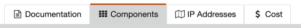
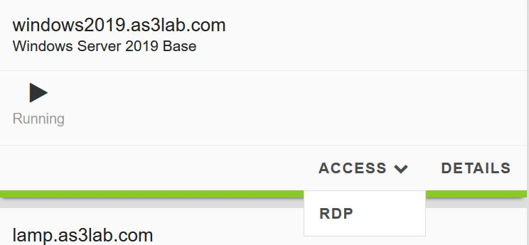
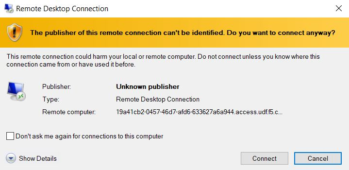
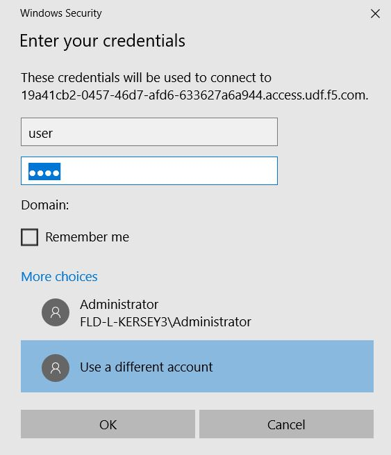
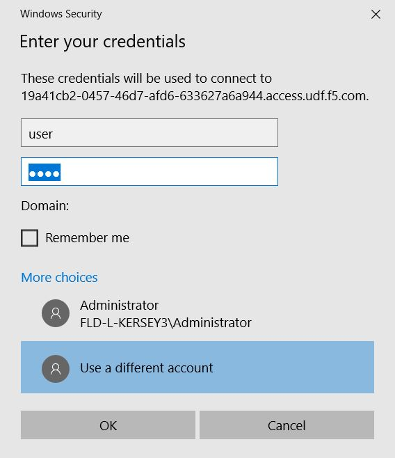
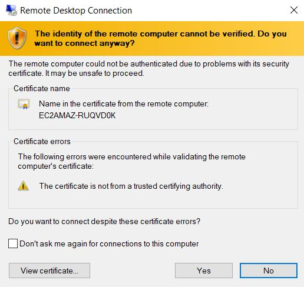
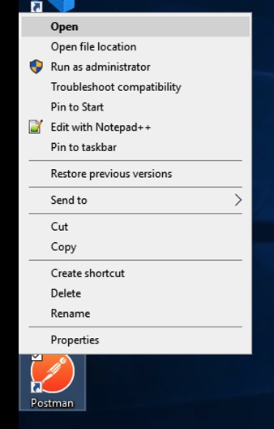
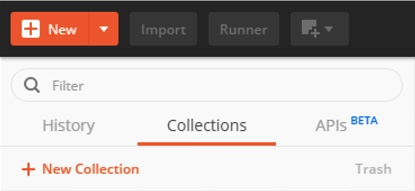
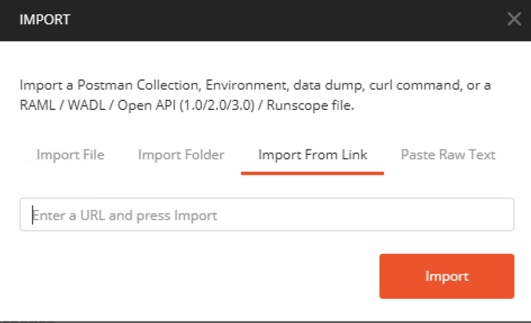

F5 Solutions for Containers > Class 3: Application Deployments with BIG-IP and Application Services (AS3) Source |
Getting Started¶
Lab Components¶
The following table lists the virtual appliances in the lab along with their networks and credentials to use.
| System Type | Networks | Credentials |
|---|---|---|
| BIG-IP01 | Management: 10.1.1.4, Internal: 10.1.10.10, External: 10.1.20.10 | admin / admin |
| BIG-IP02 | Management: 10.1.1.1, Internal: 10.1.10.11, External: 10.1.20.11 | admin / admin |
| Windows Server | Management: 10.1.1.9, Internal: 10.1.10.41, External: 10.1.20.41 | user / user |
| LAMP Server | Management: 10.1.1.6, Internal: 10.1.10.30 | None |
Starting the Lab¶
In order to complete this lab, you will connect to a Windows jump host, and you will perform all steps from there. In the instructions below, there are steps to connect to that jump host first, then you will complete the other steps from there. You can open the lab guide from the Windows jump host in order to make it easier to follow the rest of the lab.
Exercise 1 - Login to Windows jump host
Click on the
Componentstab in your UDF deploymentUnder
Systemsfind the Windows Server 2019 Base and clickAccess, then clickRDP. When prompted, select option toSaveRDP file. RDP file will be downloaded to your local machine.Open the RDP file downloaded in the previous step and click
Continuewhen prompted.When prompted for login credentials, select
More Choices.Select
Use a different accountunderMore Choicesoption.Enter credentials: user / user
Click
OK.When prompted, click
Yesto connection, and session will be established to Windows host.Congratulations! You are now connected to your Windows jump host.
Exercise 2 - Launch and configure Postman
Right click and open Postman
Once Postman has launched, you need to load the Postman environment variables and import the collections we will be using for the lab.
When Postman is open, click on the
Collectionstab. If there is a collection present, right click and selectDeleteto remove the collection.First, import the Postman collection, which are located on a github repository. On the top left, click the
Importbutton.Select
Import From Linkand paste the link into the text box,https://raw.githubusercontent.com/f5devcentral/f5-agility-labs-automation/master/docs/class03/module1/images/AS3%202020%20Lab.postman_collection20200204.json, then clickImport:You should now see a new folder under the
Collectionstab to the left of the Postman application screen.Navigate to File -> Settings and confirm the
SSL Certificate Verificationoption is turned OFF. If it is on, please turn it OFF. Once finished, exit the settings menu.